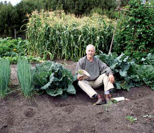
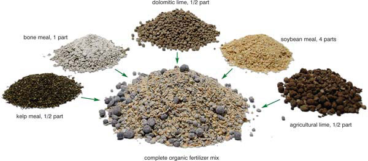
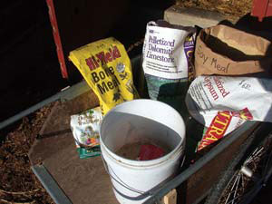
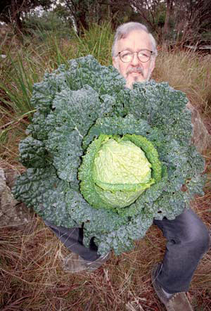

Because my garden supplies about half of my family’s yearly food intake, I do all I can to maximize my vegetables’ nutritional quality. Based on considerable research and more than 30 years of vegetable growing, I have formulated a fertilizing mix that is beneficial for almost any food garden. It is a potent, correctly balanced fertilizing mix composed entirely of natural substances. It’s less expensive than commercial organic fertilizers, and it’s much better for your soil life than harsh synthetic chemical mixes (see “Chemical Cautions”).
In my gardens, I use only this mix and regular additions of compost. Together they produce incredible results. I’ve recommended this system in the gardening books I’ve written over 20 years. Many readers have written me saying things like, “My garden has never grown so well; the plants have never been so large and healthy; the food never tasted so good.” The basic ingredients - seed meal, various kinds of lime, bone meal and kelp meal - are shown below. The complete recipe is on the tear-out poster located within this article.
To concoct the mix, measure out all materials by volume: that is, by the scoop, bucketful, jarful, etc. Proportions that vary by 10 percent either way will be close enough to produce the desired results, but do not attempt to make this formula by weight. I blend mine in a 20-quart plastic bucket, using an old saucepan as a measuring scoop. I make 7 to 14 quarts at a time.
This mix is inexpensive judged by the results it produces; it’s also inexpensive in monetary terms if you buy the ingredients in bulk from the right vendors. Urban gardeners may have to do a bit of research to find suppliers that have the right ingredients. Farm and ranch stores as well as feed and grain dealers are the best sources for seed meals, which are typically used to feed livestock. If I were an urban gardener, I would visit the country every year or two to stock up. The other ingredients usually can be found at garden shops, although they probably will be sold in smaller quantities at relatively high prices per pound. You may find the best prices by mail order or on the Internet.
Seed meals and various kinds of lime are the most important ingredients (see “Basic Organic Fertilizer Ingredients”). These alone will grow a great garden. Gypsum is the least necessary kind of lime, but it’s included because it contains sulfur, a vital plant nutrient that is deficient in some soils. If gypsum should prove hard to find or seems too costly, don’t worry about it - double the quantity of inexpensive agricultural lime. If you can afford only one bag of lime, in most circumstances your best choice would be dolomitic limestone. You also could alternate agricultural lime and dolomite from year to year or bag to bag.
Bone meal is usually available at garden centers. Guano, rock phosphate and kelp meal may seem costly or difficult to obtain, but they add considerable fortitude to the plants and increase the nutritional content of your vegetables. Go as far down the recipe as you can afford, but if you can’t find the more exotic materials toward the bottom, don’t worry too much. However, if concerns about money stop you from obtaining kelp meal, rock dust or a phosphate supplement, I suggest taking a hard look at priorities. In my opinion, you can’t spend too much money creating maximum nutrition in your food - a dollar spent here will save several in health care costs over the long term.
Before planting each crop, or at least once a year (preferably in the spring), uniformly broadcast 4 to 6 quarts of fertilizer mix atop each 100 square feet of raised bed, or down each 50 feet of planting row in a band 12 to 18 inches wide. Blend in the fertilizer with a hoe or spade. This amount provides sufficient fertility for what I’ve classified as “low-demand” vegetables to grow to their maximum potential and is usually enough to adequately feed “medium-demand” vegetables (see “Which Crops Need the Most”). If you’re planting in hills, mix an additional cup of fertilizer into each.
After the initial application, sprinkle small amounts of fertilizer around medium- and high-demand vegetables every three to four weeks, thinly covering the area that the root system will grow into. As the plants grow, repeat this “side-dressing,” placing each dusting farther from their centers. Each application will require more fertilizer than the previous. As a rough guide, side-dress about 4 to 6 additional quarts total per 100 square feet of bed during a crop cycle. If the growth rate fails to increase over the next few weeks, the most recent application wasn’t needed, so don’t add any more.
Nonorganic synthetic fertilizers should come with labels warning against giving plants too much. One reason I don’t recommend the use of chemical fertilizers is that it’s too easy for inexperienced gardeners to cross the line between just enough and too much.
Chemical fertilizers are too pure. This is particularly true of inexpensive chemical blends - even so-called “complete” chemical fertilizers are entirely incomplete. They supply only nitrogen, phosphorus and potassium. Unless the manufacturer intentionally puts in other essential minerals, the chemical mix won’t supply them. Especially troublesome is that chemical fertilizers rarely contain calcium or magnesium, which plants need in large amounts along with tiny traces of several other minerals. Plants lacking any essential nutrients are more easily attacked by insects and diseases, contain less nourishment for you and often don’t grow as well as they could.
There is yet another drawback: All inexpensive chemical fertilizers dissolve quickly in soil. This usually results in a rapid burst of plant growth, followed five or six weeks later by a big sag, requiring yet another application. Should it rain hard enough for a fair amount of water to pass through the soil, the chemicals dissolved in the soil water will be transported as deeply into the earth as the water penetrates (this is called “leaching”), so deep that the plant’s roots can’t reach them. With one heavy rain or one too-heavy watering, your fertile topsoil becomes infertile. The chemicals also can pollute groundwater. The risk of leaching is especially great in soils that contain little or no clay.
Organic fertilizers, manures and composts, on the other hand, release their nutrient content only as they decompose - as they are slowly broken down by the complex ecology of living creatures in the soil. The soil temperature determines the length of this process. The rate of decomposition roughly doubles for each 10 degree increase of soil temperature. Complete decomposition of most organic fertilizers takes around two months in warm soil. During that time, they steadily release nutrients.
Chemical fertilizers can be made to be “slow-release,” but these sorts cost several times as much as the type that dissolves rapidly in water. The seed meals in my organic fertilizer mix are natural slow-release fertilizers, and they usually are less expensive than slow-release chemical products.
Mix uniformly, in parts by volume:
4 parts seed meal*
1/4 part ordinary agricultural lime, best finely ground
1/4 part gypsum (or double the agricultural lime)
1/2 part dolomitic lime
Plus, for best results:
1 part bone meal, rock phosphate or high-phosphate guano
1/2 to 1 part kelp meal (or 1 part basalt dust)
*For a more sustainable and less expensive option, you can substitute chemical-free grass clippings for the seed meal, although clippings will not provoke the same strong growth response. Use about a half-inch-thick layer of fresh clippings (six to seven 5-gallon bucketfuls per 100 square feet), chopped into the top 2 inches of your soil with a hoe. Then spread an additional 1-inch-thick layer as a surface mulch.
Once a year (usually in spring), before planting crops, spread and dig in the following materials.
Low-demand Vegetables:
1/4 inch layer of steer manure or finished compost
4 quarts organic fertilizer mix/100 sq. ft.
Medium-demand Vegetables:
1/4 inch layer of steer manure or finished compost
4 to 6 quarts organic fertilizer mix/100 sq. ft.
High-demand Vegetables:
1/2 inch layer of steer manure or finished compost
4 to 6 quarts organic fertilizer mix/100 sq. ft.
These recommendations are minimums for growing low-, medium- and high-demand vegetables on all soil types, except heavy clay. (Gardeners dealing with heavy clay soils should amend the recommendations. The first year, spread an inch of decomposed organic matter and dig it in to a shovel’s depth. In subsequent years, apply manure or compost and fertilizer mix as described above, using about 50 percent more fertilizer.) In addition to these initial applications, add side-dressings of fertilizer around medium- and high-demand crops every few weeks through the season; altogether, these additions may equal the amount used in initial preparation.
This organic fertilizer is potent, so use no more than recommended above. Excessive liming can be harmful to soil. If you can, increase the amounts of manure and compost by 50 percent to 100 percent, but no more than that. If you think your vegetables aren’t growing well enough, do not apply more manure or compost; fix it with fertilizer mix.
Sacked steer manure is commonly heaped in front of stores in springtime at a relatively low price per bag. However, this material may contain semidecomposed sawdust and usually has little fertilizing value. However, it does feed soil microbes and improves soil structure, which helps roots breathe. And it is not raw manure; it has been at least partially composted. It is useful if not overapplied.
For thousands of years, home gardens received the best of the family’s manures, and lots of them. Few vegetable crops can thrive in ordinary soil, because they have been coddled for millennia in highly improved conditions. However, different vegetables demand different levels of soil quality. Both low- and medium-demand vegetables will become far more productive when grown in soil that has received at least the minimum applications of fertilizer listed above. High-demand vegetables are sensitive, delicate species and usually will not thrive unless grown in light, loose and always-moist soil that provides the highest level of nutrition.
Low-demand Vegetables
Jerusalem artichoke, arugula (rocket), beans, beets, burdock, carrots, chicory, collard greens, endive, escarole, fava beans, herbs (most kinds), kale, parsnip, peas, Southern peas, rabb (rapini), salsify, scorzonera, French sorrel, Swiss chard (silverbeet), turnip greens
Medium-demand Vegetables
Artichoke, basil, cilantro, sprouting broccoli, Brussels sprouts (late), cabbage (large, late), cutting celery, sweet corn, cucumbers, eggplant, garlic, giant kohlrabi, kohlrabi (autumn), lettuce, mustard greens (autumn), okra, potato onions, topsetting onions, parsley/root parsley, peppers (small-fruited), potatoes (sweet or “Irish”), pumpkin, radish (salad and winter), rutabaga, scallions, spinach (autumn), squash, tomatoes, turnips (autumn), watermelon, zucchini
High-demand Vegetables
Asparagus, Italian broccoli, Brussels sprouts (early), Chinese cabbage, cabbage (small, early), cantaloupe/honeydew, cauliflower, celery/celeriac, Asian cucumbers, kohlrabi (spring), leeks, mustard greens (spring), bulbing onions, peppers (large-fruited), spinach (spring), turnips (spring)
Seed meals are byproducts of making vegetable oil and are mainly used as animal feed. They are made from soybeans, flaxseed, sunflowers, cotton seeds, canola and other plants. Different kinds are more readily available in different regions of the country. When chemically analyzed, most seed meals show similar nitrogen-phosphorus-potassium (NPK) content - about 6-4-2. Because seed meals are used mainly as animal feed and not as fertilizer, they are labeled by protein content rather than NPK content. The general rule is that 6 percent protein provides about 1 percent nitrogen, so buy whichever type of seed meal gives you the largest amount of nitrogen for the least cost.
If you want seed meals that are free of genetic modification and grown without sewage sludge or pesticides, choose certified organic meals. Seed meals are less expensive in 40- or 50-pound bags, which can be found at farm stores rather than garden centers. Seed meals are stable and will store for years if kept dry and protected from pests in a metal garbage can or empty oil drum with a tight lid.
Lime is ground, natural rock containing large amounts of calcium, and there are three types. Agricultural lime is relatively pure calcium carbonate. Gypsum is calcium sulfate. Dolomite, or dolomitic lime, contains both calcium and magnesium carbonates, usually in more or less equal amounts. If you have to choose one kind, it probably should be dolomite, but you’ll get a far better result using a mixture of the three types. These substances are not expensive if bought in large sacks from agricultural suppliers. (Do not use quicklime, burnt lime, hydrated lime or other chemically active “hot” limes.)
You may have read that the acidity or pH of soil should be corrected by liming. I suggest that you forget about pH. Liming to adjust soil pH may be useful in large-scale farming, but is not of concern in an organic garden. In fact, the whole concept of soil pH is controversial. My conclusion on the subject is this: If a soil test shows your garden’s pH is low and you are advised to apply lime to correct it - don’t. Each year, just add amendments as shown in “How Much to Use”. Over time, the pH will correct itself, more because of the added organic matter than from adding calcium and magnesium. And if your garden’s pH tests as acceptable, use the full recommendations in “How Much to Use” anyway, because vegetables still need calcium and magnesium in the right balance as nutrients.
If you routinely garden with this homemade fertilizer mix, you won’t need to apply additional lime to the garden. The mix is formulated so that, when used in the recommended amount, it automatically distributes about 50 pounds of lime per 1,000 square feet each year.
Bone meal, phosphate rock or guano (bat or bird manure) all serve to boost the phosphorus level, and phosphate and guano usually are also rich in trace elements. Bone meal will be the easiest of the three to find at garden centers.
Kelp meal (dried seaweed) has become expensive, but one 55-pound sack will supply a 2,000-square-foot garden for several years. Kelp supplies some things nothing else does - a complete range of trace minerals plus growth regulators and natural hormones that act like plant vitamins, increasing resistance to cold, frost and other stresses.
Some rock dusts are highly mineralized and contain a broad and complete range of minor plant nutrients. These may be substituted for kelp meal, but I believe kelp is best. If your garden center doesn’t carry kelp meal and can’t order it, you can get it from Peaceful Valley Farm Supply of Grass Valley, Calif.: (888) 784-1722.
- Adapted from Gardening When it Counts, a Mother Earth News“Book for Wiser Living” from New Society Publishers. To order, visit Mother’s Bookshelf.
|
 MURIEL BROWN (CHEN) Steve Solomon’s garden soil and crops show the effects of steady applications of his homemade organic fertilizer. Solomon has written nine books on gardening and maintains an online gardening resource at http://www.soilandhealth.org. |
 MATTHEW T. STALLBAUMER Your garden crops will thrive and you’ll save money with this easy, homemade organic fertilizer recipe. |
 CHERYL LONG Organic fertilizer ingredients are less expensive when bought in bulk. The basic organic fertilizer ingredients are seed meal, agricultural lime, gypsum, dolomitic lime (or dolomite), kelp meal and bone meal, rock phosphate or high-phosphate guano. |
|
 MURIEL BROWN (CHEN) Steve Solomon, founder of Territorial Seed Co., has gardened extensively in California, Oregon, Canada and Australia, where he now lives. His book, Gardening When it Counts, is available at Mother Earth Shopping. |
|
|